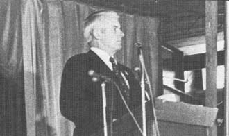
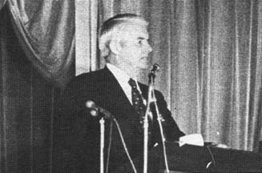

Dave Brower: Tireless Environmental Champion
A Plowboy Interview with Dave Brower the founder of Friends of the Earth and League of Conservation Voters, and the Sierra Club's first Executive Director.
By the Mother Earth News staff
May/June 1973
David R. Brower, who says that he has had a love for the earth's wild places for as long as he can remember, began volunteer work for the Sierra Club 33 years ago. . . and the enthusiasm, dedication and energy he poured into that conservation group's projects led the organization to appoint him as the Sierra Club's first Executive Director in 1952. It was a wise move. During the next I 7 years under Brower's leadership, the club's membership swelled from 7,000 to 77,000 and became a major voice in the environmental movement.
It would seem, however, that the very growth Brower created eventually led to his ouster from the conservation organization that he so dearly loved. As the Sierra Club became bigger and bigger, it was forced-as are all large operations-to become a little more careful, to do things "by the book". . . to have less and less patience with mad, impetuous Dave Brower, the very man whose whirlwind vitality had attracted so many members to the club in the first place.
It was a little like the settling of Dave's beloved West all over again: The mountain men's wild tales of extravagant wealth lured their less daring cousins across the Rockies . . . and once those pedestrian relatives had built their stores and schools and churches . . . well, the sheriff, mayor and city council began to get a little nervous every time a buckskin shirt walked down the street. So they called a town meetin' and voted the mountain men out. The new, littlemetropolis may well have been the better for it, but . . . .
David Brower was voted out of the Sierra Club in 1969 and, luckily for the planet, immediately began founding or helping to found Friends of the Earth, the League of Conservation Voters and a number of related environmental organizations. Friends of the Earth, although still relatively small and young, has already been credited with-among other accomplishments-being the major force in the defeat of the SST.
On March 24th, 1973, The Sun People-a small but extremely impressive ecology group-held an alternative energy conference in Cape May, New Jersey. Bucky Fuller, U.S. Senator Mike Gravel and many other well-known and obscure solar, wind and water power experimenters, experts and promoters were there. David Brower addressed the gathering on the subject of atomic energy . . . and why, as an environmentalist, he is appalled at the prospects of introducing on a wide scale this "solution" to the coming energy crunch.
Some MOTHER people attended the Cape May conference and, in the wee hours of the morning, finally cornered the inexhaustible Dave Brower long enough to interview him. It should be noted that, although Mr. Brower speaks with impressive authority and holds definite views on many environmental subjects, he always seems to deliver his thoughts in an easy, warm, human and lighthearted manner. It's impossible not to like the man and just as impossible to keep a straight face when he peppers-as he constantly does-his remarks with humorous and sometimes hilarious offhand observations. The following interview, you should be warned, does not at all capture the Real Dave Brower.
PLOWBOY: Mr. Brower, thanks to your seemingly tireless work over the past 20 or so years with the Sierra Club, Friends of the Earth and other environmental organizations, you've become a rather legendary figure in the conservation and ecology movement. If you'll allow me to, however, I'd now like to strip away some of your larger-than-life image and introduce all of MOTHER's readers to the flesh and blood human being underneath. Please, if you will, give us a brief rundown of David Brower's existence to this point.
BROWER: I was born in Berkeley, California 60 years ago and I dropped out of college in my sophomore year. The rest of my education came a little more slowly. I went in the back door and was an editor of the University of California Press for eleven years, with time out for World War II.
PLOWBOY: How did you serve during the war?
BROWER: As a battalion intelligence officer in the ski troops-mountain troops-in Italy . . . and I had one experience there that still impresses me.
PLOWBOY: What was that?
BROWER: Well, I don't want to bore you . . . but I can vividly recall a day when I had gotten up on a little observation point to see if the enemy was in an area that we were moving toward. As usual, I didn't spot much because the Germans were very good at keeping themselves unseen. That was one of their tricks. We were always bustling all over and they were out of sight. Maybe I've got that backward: Maybe we were the ones who were out of sight, really out of sight.
Anyway, I sat down at the top of that hill in a slit trench or something that would protect me from rifle fire and, for some reason, I was looking back instead of forward . . . when there was a click against the branch right over my head and I knew it was a shell.
Now I must explain that, at the time, we were losing a hell of a lot of troops because the Germans were very good at getting tree bursts. They didn't have, as we did, radar-activated or proximity-fused shells that would explode at a certain distance above the ground-so the resulting shrapnel could kill or wound soldiers over a wider area-but they got the same effect by aiming their 70mm shells at the trees above us.
And this particular shell just ticked a branch right over me but, luckily, the limb didn't touch the projectile's fuse. And the shell went on and-because I was looking back-I saw this dark circle get smaller and smaller and smaller until it hit a hill on the other side of a ravine and BANG! I figure from that point on, my life has been a gift. About this much variation (Brower measures a fraction of an inch between thumb and forefinger) in the path of that shell and I wouldn't be sitting here boring you tonight.
PLOWBOY: You're not at all boring. And after the war?
BROWER: I sort of kept my hand in writing and went to work for the Sierra Club in `52, walked the plank there in `69, founded Friends of the Earth and the League of Conservation Voters after that, began working with the John Muir Institute and then started helping found Friends of the Earth organizations here and there in other countries. That pretty well brings us up to the present.
PLOWBOY: During your 17 years with the Sierra Club, you're credited with being the driving force behind that operation's growth from something like 7,000 members to approximately 77,000 dues payers. With that kind of a record behind you, why would the Sierra Club force you to "walk the plank", as you say?
BROWER: It was just honest differences of opinion between myself and the rest of the Sierra Club's board of directors. Superficial differences about how international we should get, how far we should go into publishing . . . and whether or not I was competent. Well, I was always in competent and I told them so and we pretty much had ourselves a Mexican standoff on these minor issues when we found ourselves face to face on a major matter: atomic energy.
When Pacific Gas & Electric tried to locate a nuclear reactor at Bodega Head in California, most of the Sierra Club's board of directors refused to enter the fight against the installation. That battle was fought by David Tesonen's Northern California Association to Preserve Bodega Head and Harbor and, although I was still in the Sierra Club, I helped David's group as much as I could. My action ruffled some feathers but I was allowed to remain in the organization.
Then we came to the Diablo Canyon proposal where PG&E wanted to build a major nuclear installation on the last unspoiled bit of California coast between Cape Mendocino and the Mexican border. That's a long, long stretch and there was only this one little spot left and PG&E wanted it. Actually, the company really preferred to build at Nipomo Dunes-which is beautiful and which most of the other Sierra Club directors justifiably wanted to save-and had substituted the Diablo Canyon location only at the insistence of the club. But the decision to recommend the Diablo site was made in spite of the fact that none of the voting directors had ever seen it!
I urged that the decision be delayed until the Sierra Club's executives could at least inspect Diablo Canyon before reaching a verdict on the matter, but I was outvoted. A great deal of pressure was then built up to remove me from the club and my resignation was, finally, a forced one.
PLOWBOY: Well you certainly don't seem bitter about being squeezed out of an operation that you promoted so vigorously for 17 years.
BROWER: Oh no. The Sierra Club is a very good and a very powerful force for conservation and, as a matter of fact, has grown faster since I left than it was growing while I was there! It must be doing something right. Besides, the club has changed and is now into many of the things that its other directors used to fuss at me for.
PLOWBOY: It should be quite obvious to anyone who heard you speak at the conference today that you're very much opposed to the use of atomic energy. Have you always felt this way?
BROWER: Not at all. Until four years ago, in fact, I was absolutely in love with the atom. When I was heading the campaign to protect Dinosaur National Monument and the Grand Canyon, I was actually telling people that-by harnessing the atom-we could enter a new era of unlimited power that would do away with the need to dam our beautiful streams. Even as recently as `69, when I was fighting with the Sierra Club about the Diablo Canyon reactor, I was saying, "No, not there . . . put it somewhere else on the California coast." I still had the illusion, you see, that atomic energy could be a safe alternative to damming all our rivers for power.
PLOWBOY: What changed your mind?
BROWER: I began to get a little suspicious in the mid-fifties during a long session I had before the Senate Interior Committee when, once again, I was advocating the use of the atom. At that time a senator who was on the Joint Committee of Atomic Energy said rather quietly, "You know, we're having a little problem with waste these days." I didn't know what he meant then, but I know now.
PLOWBOY: He was referring to nuclear waste.
BROWER: He was, of course, referring to nuclear waste . . . which is lethal and which we have absolutely no way of disposing of. There is no place where we can safely store worn-out reactors or their garbage. No place! We tried burying the waste at sea and the concrete cannisters that held it cracked open. We've pumped it into cavities in solid rock and found that it spread through the rock. We've put it in Kansas salt mines, only to learn that the mines leak.
Some otherwise sane scientists have seriously proposed that we tuck this deadly garbage under the edges of drifting continents . . . but how can they be sure the moving land masses will climb over the waste and not just push it forward?
Other supposedly rational spokesmen want to drop our radioactive rubbish on the Antarctic and let it melt its way down about a mile and a half into the ice. Still others-in England, interestingly enough-want to dump it into the Irish Sea. Maybe they figure that will end the troubles in Ireland once and for all.
Yet another proposal would have us rocket the waste into the sun . . . but, as you're probably aware, about one in ten of our space shots doesn't quite make it out of the earth's gravitational field. Apollo 13, as you may remember, gave us a reactor that is bubbling away right now somewhere in the Pacific. It's supposed to be bubbling away on the moon, but it's in the Pacific Ocean instead.
Perhaps most ridiculous of all is the suggestion that we "keep" our radioactive garbage for the use of our descendants. This "solution", I think, requires an immediate poll of the next 20,000 generations . . . we must let them sit in judgment on the madness-or immorality-of the idea. Is the minor convenience of allowing the present generation the luxury of doubling its energy consumption every 10 years worth the major hazard of exposing the next 20,000 generations to this lethal waste?
PLOWBOY: Twenty thousand generations is a rather powerful span of time. Just how long is nuclear garbage dangerous anyway?
BROWER: It depends. There are many different kinds of radioactive waste and each has its own half-life so, just to be on the safe side and to simplify matters, I base my calculations on the worst one and that's plutonium.
Pluonium's half-life is 24,000 years. This means that, after 24,000 years, it's only half as dangerous as it was when you started out. But this is still so bad that you've got to stretch its sequestering clear on out to 500,000 years . . . which is about five times as long into the future as Neanderthal man is in the past. And I don't think we have very good records about what they were thinking except, as I pointed out earlier today, that they did invent our political system.
The risk presented by these lethal wastes is like no other risk, and we should not be expected to accept it or to project it into the future . . . in order for manufacturers and utilities to make a dollar killing now.
PLOWBOY: Agreed. And, as you and other ecologists have pointed out, that isn't the half of it. Nuclear power installations present even more immediate and horrifying dangers.
BROWER: Yes. To name just one, there's the problem of cooling the plants. If a reactor loses its cool, it can quickly go out of control . . . even if it's shut down promptly. Every reactor absolutely must have an effective emergency cooling system and the Atomic Energy Commission has made this requirement quite clear. But a year's hearing in 1972-before the AEC's safety and licensing board-revealed a most alarming incompetence in emergency core cooling systems, engineering and testing.
In the face of this revelation, it is certainly odd that the AEC board has ruled "irrelevant" the questions addressed to the AEC's regulatory staff about present reactor safety criteria. Well, the AEC may wish to think that such questions are irrelevant . . . but the public had better not dare think so.
Do you know what a runaway reactor can do? It can produce a radioactive cloud that extends 100 miles downwind and kills everything-that could include anywhere from 10,000 to one million people-in two weeks flat. The fallout from the accident, of course, can cause major injury and damage even cause further away than that.
Imagine what Con-Ed's Indian Point reactor-which, by the way, has already had a one-million-dollar fuel leak-could do to Manhattan. If they hadn't caught that fuel leak in time and the Indian Point reactor had runaway and the wind had been wrong . . . how many civilians could have escaped Manhattan? Or even known which way to go? Very few. Indian Point could wipe out Manhattan. Just kill 'em all. There's no point in messing with that kind of risk . . . there just isn't that much reward in it.
PLOWBOY: OK. But let's say that the designers and engineers lick the emergency cooling problem. Let's say, in fact, that they design a perfect reactor.
BROWER: Even if you build the perfect reactor, you're still saddled with a people problem and an equipment problem. What happens when the guy who runs the reactor gets out of bed wrong or decides, for some reason, that he wants to override his instruction sheet some afternoon? What happens when a part breaks down somewhere inside that piece of machinery and it isn't perfect anymore?
If you'll look at the records that the AEC has of the little accidents-the lesser disasters-that have already taken place, you'll see that incidents of this nature are almost common. There was one reactor mishap where a whole series of 32 things that "couldn't go wrong" did. One fed the other, fed the other, this wasn't going, that valve wasn't quite ready to work and so on. It is just too much to expect perfection and the risk of anything less is just too enormous.
PLOWBOY: What about the coming breeder reactors that many nuclear scientists are now pushing so strongly?
BROWER: The breeder reactor has all the problems we've just discussed-in spades-and introduces a few brand new ones all its own. The threat, I think, has best been described by the AEC itself which recently pointed out that breeder reactors should not be developed until a safe fission reactor has been built . . . and, of course, that hasn't happened yet.
Over and above the "ordinary" nuclear powerplant dangers, however, you must realize that breeder reactors-which produce plutonium at the same time they generate usable power-would throw us right into the middle of a plutonium economy. This is the same plutonium that must be isolated from all living things for 500,000 years . . . and once the breeders are introduced, we'll soon be shipping it back and forth across the country from one nuclear installation to another by the ton.
Now this is a very dangerous undertaking. First, there's the increased risk of exposing innocent bystanders to that lethal cargo and, second, it practically invites the criminal element to wreak all kinds of havoc by hijacking the material. As Dr. Donald Geesaman of the AEC has documented quite vividly, the transportation system of this country is so heavily infiltrated by the Mafia that they can divert any shipment of anything they want, at any time. (I've just learned that, for exposing this danger and otherwise criticizing lax AEC policies, Dr. Geesaman has been discredited and fired by the Atomic Energy Commission. This is the same action that was taken by the AEC against two other courageous scientists-John Gofman and Arthur Tamplin-who recently spoke out against what they believed to be extremely dangerous nuclear policy. Maybe it's about time for a Watergate-type investigation of the AEC. -MOTHER. )
Now it only takes about 15 kilos (33 pounds) of plutonium to make a Nagasaki-type bomb. I don't know how to do it and I don't want to know how . . . but other people do. People in organizations like the Black September Movement. People who are extremely clever and who are willing to sacrifice anything to get their way. Once we open the door to the plutonium economy, we expose ourselves to absolutely terrible, horrifying risks from these people.
We don't need all those dangers. The additional energy isn't worth it. The breeder program should be forgotten . . . stopped!
PLOWBOY: I take it, then, that you are now against nuclear power in any form.
BROWER: At this point, I don't want to see any atomic plants operating anywhere with fission energy until [1] we find a very large group of absolutely infallible people to build reactors, [2] we have a still larger group of infallible people to operate them and [3] we've turned every one of the Black Septembers in the world white and persuaded God to stop acting. When all that happens, atomic energy will be safe. Until then, forget it.
PLOWBOY: And what about fusion?
BROWER: It's very hard for me to know what to say about fusion right now, inasmuch as it is not yet scientifically feasible. I just can't understand how so many people are able to predict so much about something that still isn't scientifically possible.
I will say this,-though: If it is true that fusion will put unlimited amounts of energy into our hands, then I'm worried. Our record on this score is extremely poor. It seems that every time mankind is given a lot of energy, we go out and wreck something with it. Make a plot chart of our uses of power and you'll find that we use about one percent to help the environment and the other 99% to do quite irreversible damage. It scares me to think of what we could-and undoubtedly would-do with unlimited amounts of force at our finger tips.
I remember a discussion I once had with a man I respect very much. He was the head of the AEC's fusion reactor program at the time and he was telling me about all the great things we would be able to do with fusion's vast amounts of low-cost energy. "We won't have to worry anymore about solid waste," he said. "We'll be able to disintegrate it into its atoms."
Well, my friend was quite pleased by that thought and I was frightened . . . because I don't know who's going to go around sorting all those atoms into their proper cubbyholes. When you've knocked things down to their atoms, you know, you've taken molecules apart . . . and I have a sort of strong sentimental attachment to molecules. I use them myself.
PLOWBOY: Well you've certainly built a strong enough case against atomic energy . . . and you haven't even mentioned thermal pollution or DNA once.
BROWER: All I know about thermal pollution is that if we continue our present rate of growth in electrical energy consumption it will simply take, by the year 2000, all our freshwater streams to cool the generators and reactors . . . and I'd rather do something else with that water.
DNA is another matter. This is the miraculous coding, you know, that makes all life possible. It only takes up one-half of one percent of the two half cells from which each of us begins and it's the most condensed information that there is, anywhere. Understanding how DNA transmits all it knows about cancer, physics, dreaming and love will keep man searching for some time and it is absolutely imperative that we protect, preserve and pass on this genetic heritage for man and every other living thing in as good a condition as we received it.
Unfortunately, however, reactors and genes don't mix very well. Radiation can cause genes to mutate at a speed incredibly more rapid than their ordinary, orderly evolvement down through the eons. We have no idea what that can mean.
It's a criminal act of the highest order, then, when the reactor producers and operators now ask us to submit our DNA to the possibly enormous and barely comprehended consequences of radioactive bombardment from their proposed nuclear installations. For our electrical convenience and their profit, they will play reactor roulette with our genes. This is reckless radicalism at its worse.
PLOWBOY: I would assume that the people who are promoting atomic energy have considered this problem and decided that the risk is justified.
BROWER: Look at it this way: You would probably have taken a rather dim view of me if I had picked up a machine gun this afternoon and sprayed the audience at the conference while I said, "Boy! I certainly hope nobody gets hurt."
That's just about what's happening when we allow these guys to play with radioactivity. They simply don't know that much about what they're doing. There isn't enough control. There isn't enough capability in ordinary people to tinker with such a complicated piece of machinery. It's like turning the space program over to the Long Island Railroad.
PLOWBOY: But what about the argument that-like it or not-we have no alternative but to use nuclear power? Bill Cherry, the solar energy expert from NASA's Goddard Space Flight Center, stated at the conference today that-at best-the sun and other "clean" alternative. energy sources can supply something like only 20% of the power we're going to be using 30 years from now. Do you think he was being realistic?
BROWER: No . . . and "realistic" is a loaded word for me. Anyone who uses the word "realistic" is all bad . When people say, "You're not being realistic," they're just trying to tag some thoughts that they can't otherwise handle.
But to get back to Cherry: Why, for God's sake, does he have to assume that our energy consumption will be at suchand-such an increased rate by the year so-and-so? Why do we double our consumption of power every fifteen or every ten or every eight or whatever-we're-down-to-now years? Why don't we cut it 10% each year? Why don't we trade in our standard of using and go back to a standard of living?
We could do it, you know. When I was in high school, the population of the earth was half what it is now . . . yet we used only one-tenth the energy we now consume. And the world worked. There was employment, there was beauty, there was good air, there was open space. I'm not necessarily saying that we should return to the world of my high school years . . . but we might learn something if we looked back once in a while to the days when we still lived within our environmental income.
Maybe, if we thought about it, we'd begin to ask some questions. Why, for instance, have we accepted the idea that we have to use as much electricity- for our air conditioning alone -as 800,000,000 Chinese use for everything? It's not really as if China never had a civilization, you know . . . or doesn't have one now.
Why does the wet rice agriculture of China return five times as much energy as is put into the crop while the wet rice agriculture of the U.S. returns only one-fifth the energy invested? Somewhere between those two sets of figures there must be a more rational way for us to grow wet rice.
PLOWBOY: That last one is a particularly good example. Many people now know that we consume far too much energy to air condition poorly designed tract houses and automobiles that should never have been built in the first place . . . but few of us realize the ridiculous and unnecessary quantities of power that we currently pour into farming on this continent.
BROWER: Yes, it's a vicious spiral. The more we pour the big machines, the fuel, the pesticides, the herbicides, the fertilizer and chemicals into farming, the more we knock out the mechanism that made it all work in the first place. Then we have to invent still more energy-intensive synthetics which further spoil the natural processes that were doing all the work for free in the beginning. And every time we go around we say we've got to double the power we'll use on the next circuit . . . when, for God's sake, what we should do is just stop dead in our tracks.
Bring diversity back to agriculture. That's what made it work in the first place . . . before we started to intercept all the natural systems and chop off the interflow that gave us free maintenance. It's not just Shell Chemical or Standard Oil that's to blame . . . not as long as we continue our genetic mining. We play around with certain strains-such as miracle wheat-and make them more and more energy-intensive in order to get more production per acre . . . forgetting every ecological law in the book.
When I say that "we" forget the ecological laws, I mean the people who are running the United States Department of Agriculture and the people running the Food and Agriculture Organization. They're positively geared to the energy-intensive disruption of the earth's fertility. They're putting it on a halflife basis . . . playing around to handle the immediate requirement at an enormous and unknown cost to the future.
What's even more unsettling is the way these people hide what they're doing from the public. They strip the labels off miracle wheat when they ship it, for instance, and say, "Watch out. Don't plant too much and don't depend on it too much." This is where we're making frightful mistakes and I know of no ecologist who will disagree with what I've just said and no one in the USDA or FAO who will pay any attention to it.
Why the hell don't we just go back and design by nature. There isn't anything we need that hasn't already been designed so well that it's just sitting there waiting for us. And if it's not there, forget it. . . because if it was going to work, it would be there. Like miracle wheat . . . it would be here if nature intended it to work, but it's not here.
PLOWBOY: They're finding that out, you know, right now in some of the Western States. After years and years of trying to grow better pasture and breed more efficient cattle, they're starting to learn that they can grow more pounds of meat per acre-and do it easier-if they'll just let the native grasses come back and then use that forage to raise buffalo.
BROWER: I didn't know that, but it's very interesting.
PLOWBOY: The ranchers who've tried it claim that the native grasses-although so scrubby that cattle can't fatten on them-are better for the soil. Buffalo, however, will gain weight on the scrub forage. Not only that, but the bison meat commands a premium price and is supposed to be tastier than beef. As a matter of fact, it is better . . . I ate some last summer. Maybe the Indians had the right idea all along.
BROWER: They just didn't know that their buffalo herds were less energy-intensive crops than the white man's cattle.
PLOWBOY: Right! Which brings up another question: How are we going to get everyone to reduce his or her consumption of energy, even if we all agree that the idea is a good one? Who goes first, in other words? Why should I try to live a less energy-intensive life unless I'm sure you'll do the same?
BROWER: That's just the point. We're all in the same boat-or on the same Spaceship Earth-together. It's time that we all got out the pledge cards and made a pact with each other. I'll turn off my lights if you will. I'll overheat and undercool my house and office half as much, drive half as wasteful a car half as far-or ride the train instead-if you'll do the same.
It's just imperative that each one of us solemnly swears to buy half as much overpackaged, disposable, obsolescent merchandise as we have been and to stop reading ads until the advertisers begin spending money to tell us how to waste less . . . or eat half as many calories . . . or drink only half as much.
PLOWBOY: I doubt that we'll ever do it. I mean, do you really think that the general public will give up anything for some nebulous concept called "ecology"? Unless, of course, we just run head-on into catastrophe and have no other choice?
BROWER: I think they will. I believe that the average guy in the street will give up a great deal, if he really understands the cost of not giving it up. And remember, I'm talking about lowering the standard of use rather than lowering the standard of living. In fact, we may find that, while we're drastically cutting our energy consumption, we're actually raising our standard of living.
Trees, you know, are such good air conditioners and are so pleasant to have around that it seems a shame to knock them down, build a house and then cool it with an impersonal, energy-hungry box stuck in the wall. Perhaps we should tell all architects and planners that they may not build another thing or even plan another thing until, as Garrett Hardin says, they've spent a year in Venice to learn what a city is like when it's built to human scale. Or we might tell those designers to go and stay in the warmer countries of southern Europe until they understand how their counterparts of centuries ago used the natural wind patterns and circulation to make a building comfortable without the kind of air conditioning that comes in a box.
PLOWBOY: I agree with you, of course, but I still think that it's going to be a tremendously difficult job to get the message across. In time, anyway.
BROWER: Oh yes. It'll be difficult, and we don't have very long to accomplish the job . . . but it can be done. Look at the SST.
PLOWBOY: Yes, tell me about the SST. Friends of the Earth is still a relatively young and small organization . . . and yet it seems that your group defeated the multi-billion-dollar politi cal, labor and corporate force behind the SST almost single-handed.
BROWER: Well it's nice of you to say that, but it wasn't that way at all. Although Friends of the Earth did more or less spearhead the drive, the work that defeated the SST was done by a coalition of several environmental groups. We were just sort of nominated as leader of that particular joining of forces, in the same way that The Wilderness Society has coordinated the actions of ecology organizations that have brought suit against the Alaskan pipeline. It's sort of like musical chairs.
PLOWBOY: How many groups usually join forces for one of these environmental-action coalitions?
BROWER: That depends. Sometimes we get three out of five and, on the next issue, we'll come up with eight out of five.
PLOWBOY: Is each organization expected to contribute a certain amount of personnel or money or time or whatever to every coalition it enters into?
BROWER: No, we all just do the best we can. Friends of the Earth was actually kind of an "also ran, me too" in the pipeline suit. The Wilderness Society and Environmental Defense Fund picked up the legal costs on that one and we've tried to help out in other ways.
PLOWBOY: Such as?
BROWER: Well one thing we did was publish a big book called Earth and the Great Weather: The Brooks Range. It has a lot to say both about the mechanics of how much oil is used by whom and about what the hell we're doing to the oldest culture by far-Eskimo-that we have on the North American Continent.
PLOWBOY: Are these alliances just chummy gatherings of ecology groups, or do you welcome the help of "outsiders" when you're getting ready to do battle against a despoiler of the environment?
BROWER: There are no outsiders in these fights and we always welcome all the help we can get . . . although I'll admit that we sometimes do a better than usual job of bringing additional strength into the fold. It depends a lot on who's in charge.
George Alderson, for instance, is the legislative director in our Washington office and he's a very good man. He knows how to just kind of play things cool-instead of coming on like gangbusters the way I sometimes do-and he can really bring people around to believing in what he's doing. For the SST fight, George put together a coalition of 30 organizations that included laborers, businessmen, economists . . . people with widely divergent backgrounds.
PLOWBOY: How did you get the economists?
BROWER: People sometimes come in by strange routes. We were joined by Paul Samuelson and, I think, 16 other economists because of Barbara Heller . . . the daughter-in-law of President Kennedy's economic advisor . . . and, collectively, they just riddled the economic arguments for the SST that the administration was putting forward. They didn't leave the administration an economic leg to stand on.
PLOWBOY: OK. Your economists, businessmen, other environmental groups-all the divergent organizations and power blocs that joined Friends of the Earth-added up to a lot of muscle in the fight against the SST. Are the environmental battles always fought and either won or lost on that lofty plane? Has the ecology movement become big business-like almost everything else-and forgotten the little man?
BROWER: Oh no! All our 30-group coalition did was dig up the facts and figures that told the environment's side of the story. The public-a lot of little individuals-did the rest. All our lobbying, the talks we had with politicians, the ads we ran, the personal appearances we made, the televised debates, the magazine and newspaper articles-all this work-would have been wasted if the public hadn't flooded their senators and representatives with cards, letters and phone calls against the SST.
PLOWBOY: The little guy is still important then?
BROWER: Extremely important. Every single individual counts . . . and, sometimes, it doesn't take that many to make a difference. Let me give you an example.
President Nixon came up, a while back, with potentially the most important speech on population control that any president, any world leader, has ever made. He said that the earth's rapidly expanding hoards of people were on a collision course with the planet's finite resources (that was for our side) but we mustn't do anything about it that would make anyone feel upset or worried (that was for the other side). In other words, the President cancelled out. He was fishing. He wanted to find out how we felt about the population problem and he was ready to go any way the majority ruled.
The only trouble was that this particular speech was a real dud at the box office. Nobody much responded at all, for or against, one side or the other. I tested this myself on a recent speaking tour by asking everyone in my audiences who had written to thank the President for his bold stand or to call him down for his misinformed statements-or anything-to raise a hand. Maybe one in a thousand responded. That's about the ratio I got . . . and that's nothing. Bear in mind, now, that I hadn't written either. I was as guilty as all the rest, and together, our inaction had helped shape Mr. Nixon's attitude on that vital environmental problem . . . and don't you forget it!
All right. Next I'd ask the members of each audience to show me how many had cared enough about defeating the Timber Supply Act to write their Congressmen. Out of each 1,000, maybe seven hands would go up. And I'd say, "Wait a minute. Think about that. The lumber industry, the paper industry, the Forest Service, the Department of Agriculture and the President were all telling Congress 'you've got to pass it, you've got to pass it' . . . and here, out of this audience-which is a skewed group if I ever saw one, since you all came to hear a buddy environmentalist-when just a handful out of a thousand took the time to send in a letter . . . we won in Congress by a margin of 2-to-1!"
OK. Then I'd ask how many people thought we needed an SST: Not a hand. How many thought we didn't? A lotta hands. How many wrote to Washington to say so? Still a lotta hands. Thank you very much! Because this was the turnaround. This was the first time the United States citizen-just one little guy multiplied a million times over-ever stood up against billions of dollars of vested interest and said, "I don't want it bigger and faster. That's not better anymore."
PLOWBOY: The democratic process is still alive and well in this country.
BROWER: It's still alive and, if we'll only take the time to learn how to use it, we can make it work for us. Politicians like to get elected and re-elected. Talk to them in language they can understand and they'll listen.
PLOWBOY: OK. After fighting environmental battles for over 20 years-only to come face to face with burgeoning stocks of atomic waste, artificially created demands for energy, agribiz that mines the soil, human overpopulation and God knows how many other potentially planet-killing forces-you're still optimistic. You still believe that we can trust the average citizen to mend his wicked ways before it's too late . . . and you're confident that all us little folks can still win the big skirmishes in the political arena.
BROWER: Yes.
PLOWBOY: All right. What's your Master Plan for turning mankind around? How can we bail out of the spiraling merry-go-round we've built and get ourselves back in touch with Mother Earth? How can we rediscover-if we ever knew-our true rights and responsibilities?
BROWER: Well, as the Welshman Allen Reese puts it, "At the edge of the abyss the only progressive move you can make is to step back." The mountaineers say the same thing in a different way: "When you're lost, retrace your steps to the last known landmark."
We are at the edge of an abyss and we're close to being irrevocably lost. We've got to search back to our last known safe landmark. I can't say exactly where it is, but I think it's back there about a century when, at the start of the Industrial Revolution, we began applying energy in vast amounts to tools with which we began tearing the environment apart.
Perhaps, once we've gone back-at least in our thinking-and we've found our bearings again, we'll take a look at what's been happening to the earth's biological resources while we've been preoccupied with all these mechanical things. And if we look very carefully, maybe we'll see that there is nothing more important on this planet than life. While we've been so busy measuring this distance and that diameter and the forces over here and those light years out there . . . we've forgotten that none of these little, nonsensical things matter if there's no life to perceive it.
And then we might peer into the future at the generations yet unborn and ask ourselves if we're really trustworthy custodians of their heritage. Do we have the right to tell them that they can never see a whale, for example, because we would rather hunt down and kill the last of these greatest of all mammals for our lubricants and cosmetics? Or do we want to say that we're going to do everything in our power to give those who follow, the gift of whales?
And as we think about it, perhaps we'll realize that each of us has not one vote . . . but ten thousand . . . or a million. For how many people do you think might yet stand on this planet before the sun grows cold?
That's the responsibility we hold iin out-hands.
|
 |
|
 |
 |
|
|